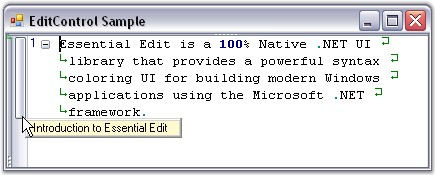

This event is fired when the bookmark tooltip text is updated.
The event handler receives an argument of type UpdateBookmarkTooltipEventArgs. The following UpdateBookmarkTooltipEventArgs members provide information specific to this event.
|
Member |
Description |
|
Bookmark |
Bookmark. |
|
HintedArea |
Rectangle that represents an object which has this tooltip. |
|
Image |
Gets / sets image associated with the tooltip. |
|
Line |
Index of the bookmarked line. |
|
Text |
Text of the tooltip. |
|
X |
Mouse X coordinate in client coordinates. |
|
Y |
Mouse Y coordinate in client coordinates. |
|
[C#]
// Handle the UpdateBookmarkToolTip event. this.editControl1.UpdateBookmarkToolTip+=new Syncfusion.Windows.Forms.Edit.UpdateBookmarkTooltipEventHandler(editControl1_UpdateBookmarkToolTip); // Set the bookmark at the specified line. this.editControl1.BookmarkAdd(this.editControl1.CurrentLine); // Specify whether bookmark tooltip should be shown. this.editControl1.ShowBookmarkTooltip = true;
private void editControl1_UpdateBookmarkToolTip(object sender, Syncfusion.Windows.Forms.Edit.UpdateBookmarkTooltipEventArgs e) { // Set the bookmark tooltip text. e.Text = " Introduction to Essential Edit "; } |
|
[VB.NET]
' Handle the UpdateBookmarkToolTip event. AddHandler Me.editControl1.UpdateBookmarkToolTip, AddressOf editControl1_UpdateBookmarkToolTip ' Set the bookmark at the specified line. Me.editControl1.BookmarkAdd(Me.editControl1.CurrentLine) ' Specify whether bookmark tooltip should be shown. Me.editControl1.ShowBookmarkTooltip = True
Private Sub editControl1_UpdateBookmarkToolTip(ByVal sender As Object, ByVal e As Syncfusion.Windows.Forms.Edit.UpdateBookmarkTooltipEventArgs) ' Set the bookmark tooltip text. e.Text = " Introduction to Essential Edit " End Sub |

Figure 83: Bookmark ToolTip Text Displayed